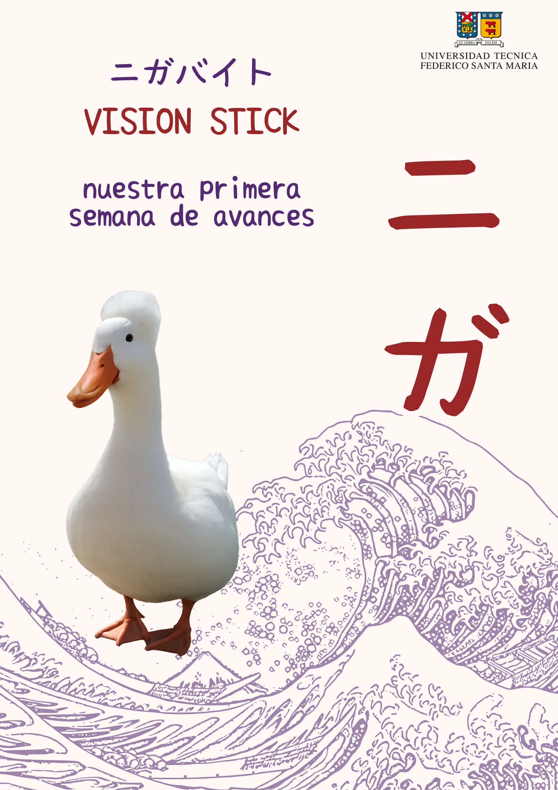

Semana 1
Planificación inicial
Definición del problema, organización del equipo, asignación de tareas y primeras ideas para el diseño del prototipo.
- Se definió la idea central del proyecto Vision Stick.
- Se asignaron roles de trabajo por integrante.
- Se comenzó la búsqueda de materiales y posibles componentes.
- Se estableció la necesidad de documentar el proceso semanalmente.